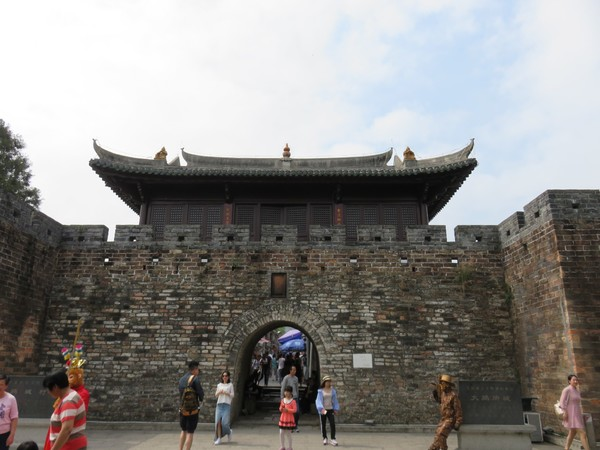
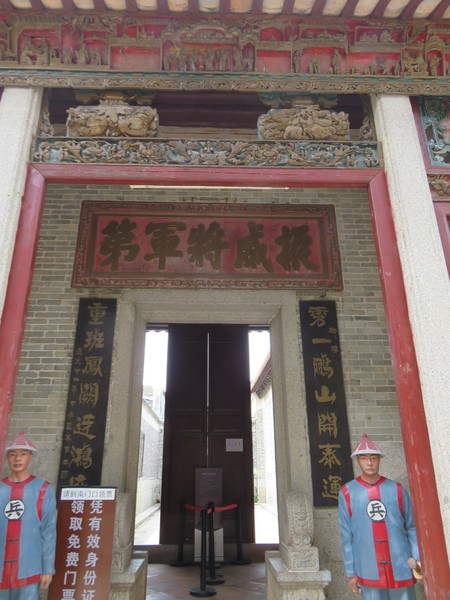
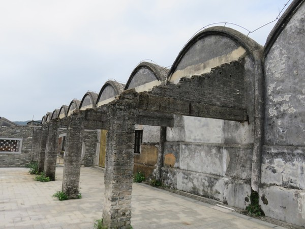
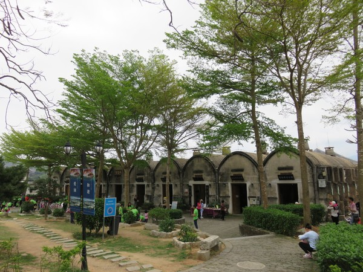
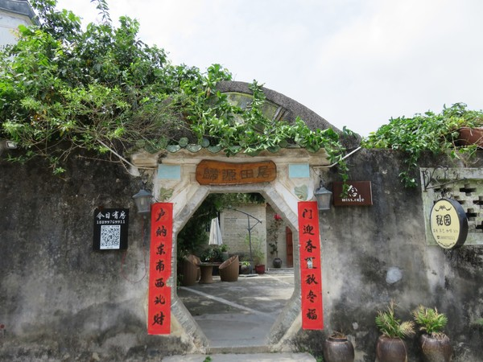
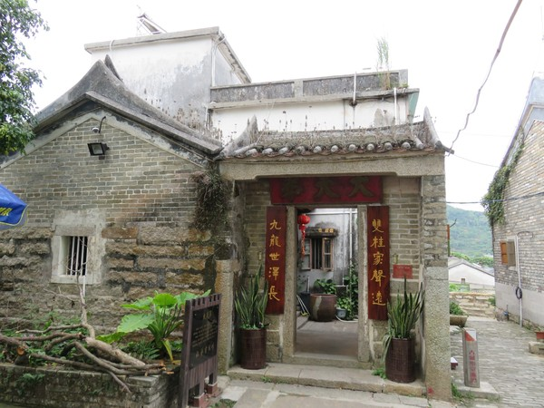
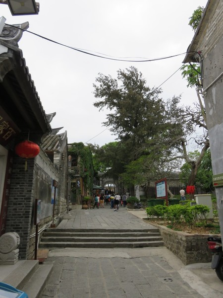
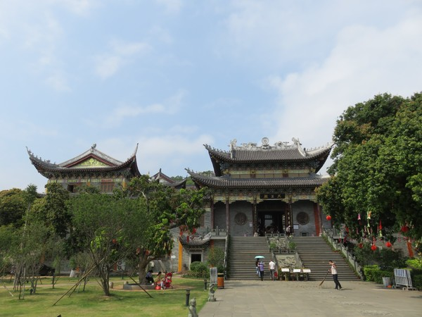

深圳八景之大鹏所城（名胜古迹）
大鹏所城，位于深圳市东部龙岗大鹏新区大鹏镇鹏城村，占地11万平方米，始建于明洪武二十七年（公元1394年），占地约11万平方米。它是明清两代中国南部的海防军事要塞，有着600多年抵御外侮的历史，涌现了赖恩爵、赖信扬、赖恩锡、刘起龙、刘黑仔等一批杰出的民族英雄。
深圳今又名“鹏城”即源于此。大鹏所城是广东省重点文物保护单位和爱国主义教育基地。1996年，成立了一个以文物保护、历史研究和旅游开发为宗旨的“大鹏古城博物馆”。大鹏所城的赖氏家族是深圳历史上的最旺家族，“三代五将”为中国历史之罕见，当地有“宋朝杨家将、清代赖家帮”之美誉。
赖家墓群包括：赖恩爵将军、赖信扬将军、赖世超将军、赖恩锡将军、赖氏始祖赖吾彪将军、赖世超夫人、赖恩爵原配夫人等。其将军数量之多、品位之高，实为深圳历史上罕见。被列入中国历史文化名村和第五批全国重点文物保护单位，是深圳八大景点和爱国主义教育基地之一。原有居民大都移民香港、荷兰或英国。著名的历史文物是龙井，赖府，刘府，四个城门，等等。
2001年6月25日，大鹏所城被国务院公布为"全国重点文物保护单位"
2003年10月8日，大鹏所城所在的鹏城村被建设部和国家文物局公布为"中国历史文化名村"
2004年6月28日，大鹏所城被评为"深圳八景"之首
大鹏所城有近十万平方米的明清民居建筑群，古建筑鳞次栉比，古色古香。其街道格局，民居风格都是明清时期遗存，其中窄街小巷，石板铺就，或大厅大堂，或小门小窗，据调查统计，城内有具重要文物价值的民居建筑十七座 (间)。大鹏古城雄伟庄重、风格古朴的城门（南门、东门、西门）和明清时期民居保存完好；狭窄蜿蜓的小巷以青石板铺就，宁静古朴；数座建筑宏伟、独具特色的清代“将军第”有序分布。其中以抗英名将赖恩爵的振威将军第最为壮观，该将军第有 150年的历史，拥有数十栋屋宇、厅、房、井、廊、院等，其中牌匾众多，雕梁画柱，是广东省不可多得的大型古建筑。此外，古城内还有侯王庙、天后宫、赵公祠、参将署等一批古迹可供参观。
从这些民居的特点来看，具有广府和客家两处民居的综合的特点，因为深圳处于广东三大民系（广府、客家、潮汕）的交汇点上，而大鹏又处这个交汇点的东北角上。这个特殊的地理位置，造就了大鹏民居的这种特殊风格。大鹏古城的明清民居是广东省保护较完整的民居之一。近些年来，一些反映明清时代背景的电影电视多经常以此为外景拍摄，例如《中英街》、《南拳王》、《小河弯弯》等。
南门城楼是主入口。整个大鹏所城是作为博物馆管理的，在城楼前面，有一个入馆的换票点，凭身份证领票。票面上注明了好几个凭票入内的景点，但实际上只有振威将军第要凭票入内。
入口
将军府
赖恩爵， 字简廷，广东省新安县大鹏城人，生于清乾隆五十九年（公元1795年）。恩爵少时随父出任阳江，后在阳江入伍。历任兵士、把总、千总、守备、都司、游击等职。道光十八年（1838年）补海门营参将。当时英国人在广东沿海贩卖鸦片，并于九龙尖沙嘴殴毙居民林维喜，且抗不交凶， 两广总督林则徐遂令恩爵领师船三只，驻地九龙寨，控制九龙湾洋面，以绝英人供应 。翌年七月，英人义律率船五只，以求食为名，突施袭击，恩爵率师船还击，岸上炮台弁兵亦发炮助战，英人伤亡甚众，遂退守水沙嘴。道光皇帝赏戴花翎 ，封“呼尔察图巴图鲁”（‘巴图鲁’为满语，勇士之意）名号，并升授副将 。道光十九年（公元1839年）九月，英船攻官涌营盘，但被守军击退。十月，赖恩爵会同陈连升等，分兵五路，袭击英军舰艇，击沉双桅洋舶一只、划艇一只，英船尽退出洋。粤督奏恩爵最熟悉外洋情形。故不久赖恩爵即被授南澳镇总兵。
当时廉、琼（今海南一带）洋贼猖獗，恩爵遂率拖船四十余只前往剿匪，降敌四百三十八人，擒拿土贼九十五人。在平定海盗中累立战功二十余次，于道光二十三年冬升任广东虎门水师军务提督。道光二十九年病逝，葬于大鹏大坑山爬鸡地；光绪三年（公元 1877 年）迁葬大鹏王母黄岐塘；原墓地遗留石人、石马各一对。
粮仓
现粮仓为上世纪五十年代重建。内常设有龙岗区大鹏古城博物馆展览——《古代兵器展》、《建筑艺术展》、《大鹏民俗婚嫁展》等等。
粮仓的正面：
随处可见的民宿：
随处可见的民宿：
随处可见的民宿：
天王殿：
东山寺位于龙头山腰，俯瞰大亚湾，背山面海，风景极为幽雅旖丽。古寺占地面积约600平方米，大墙高房，极其宏伟。山下即是大鹏古城。相传东山古寺建寺年代与大鹏古城相近，是一座有600多历史的古寺庙，据清康熙《新安县志》中有记载：“东山寺，在大鹏所东门外山上，中为观音堂，左为上帝殿，右文昌阁，前三宝殿”。
东山寺前矗立着“鹫峰胜境”石牌坊，牌坊始建于公元 1854年，距今已有150年历史，距故老传说，牌坊为东山寺的山门。牌坊用花岗岩石雕砌而成，颇为大方而壮观。正面上书“鹫峰胜境”，背面横额“鹏岛灵山”雄健有力，署名梅州张玉堂拳书，年代为咸丰四年（公元1854年）。张玉堂为清末大鹏协副将驻九龙寨城，素以儒将自居，擅拳书、指书。